Resumo DesÁgil
Sumário
Operadores, If/Else, While e For
Os operadores em Java e Python são muito parecidos, mas existem algumas diferenças.
Operadores básicos
Os operadores de atribuição e os operadores aritméticos são praticamente iguais em Python e Java. As únicas exceções são o operador de divisão e o operador de potência
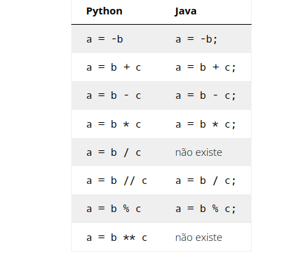 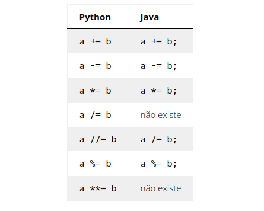
Os operadores de comparação são totalmente iguais.
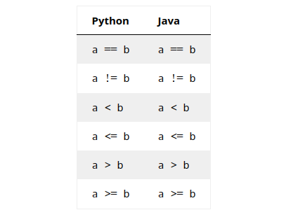
Por outro lado, os operadores lógicos são totalmente diferentes.
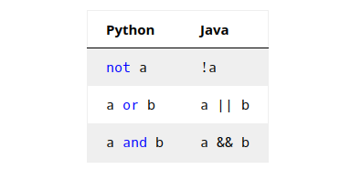
Operadores de incremento e decremento
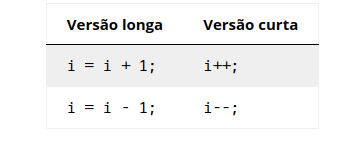
If/Else
Em Java, a condição das instruções if e else deve estar entre parênteses, e o escopo das instruções deve ser delimitado por chaves, sem usar dois pontos ao final da condição.
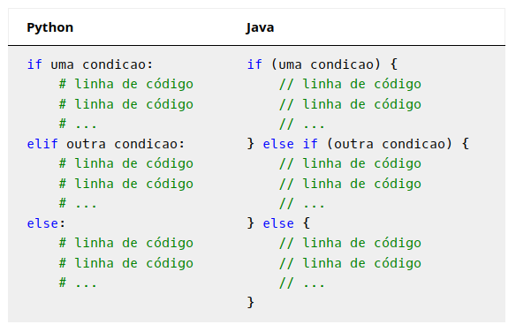
While
O while deve estar entre parênteses e seu escopo deve estar entre as chaves {e }. Além disso, a condição não pode terminar com dois pontos.
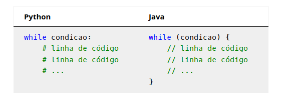
For
A instrução for pode ser usada de duas formas em Java. A primeira, diferente de Python, é uma versão alternativa do while. Dentro dos parênteses, ela tem três elementos separados por ponto e vírgula: inicialização, condição e passo.
for (inicializacao; condicao; passo) {
/* Algum código. */
}
A inicialização é uma linha de código que deve ser executada imediatamente antes da primeira iteração, a condição é análoga à condição de um while e o passo é uma linha de código que deve ser executada no final de cada iteração.
Essa estrutura é perfeita para laços de contador. Por exemplo, o código
for (int i = 0; i < n; i++) {
/* Algum código que pode usar i. */
}
i = 0; // inicialização
while (i < n) { // condição
/* Algum código que pode usar i. */
i++; // passo
}
mas o primeiro é significativamente mais limpo.
Divisão Exata de Inteiros
Em Java operador de divisão / retorna um inteiro
int a = 5;
int b = 2;
double c = a / b; // c é 2.0 (após conversão automática)
Para evitar isso, você pode converter um dos operandos para double:
int a = 5;
int b = 2;
double c = (double) a / b; // c é 2.5
int a = 5;
int b = 2;
double c = a / (double) b; // c é 2.5
Conversão de Tipos
De String para Outros Tipos
- Boolean:
boolean b = Boolean.parseBoolean(s); - Int:
int i = Integer.parseInt(s); - Double:
double d = Double.parseDouble(s);
De Outros Tipos para String
- Boolean:
String s = Boolean.toString(b); - Int:
String s = Integer.toString(i); - Double:
String s = Double.toString(d);
Aritmética e Strings
Em Java, não há multiplicação de strings, mas a soma de strings é mais poderosa que em Python devido à conversão automática de tipos:
int i = 3;
String s = "Atribuí o valor " + i + " à variável i.";
podemos usar simplesmente o código abaixo.
int i = 3;
String s = "Atribuí o valor " + i + " à variável i.";
Verificar o comprimento de uma String
Para verificar o comprimento de uma string, você pode usar o método s.isEmpty()
if (s.isEmpty()) {
Para obter o comprimento de uma string, você pode usar o método s.length()
int len = s.length();
Acessar caractere por índice
Para acessar o caractere de índice i de uma string s, você pode usar a expressão s.charAt(i)
char c = s.charAt(i);
Iterar sobre os caracteres de uma string
Para iterar sobre os caracteres de uma string s, você pode usar um loop for
for (int i = 0; i < s.length(); i++) {
char c = s.charAt(i);
/* Algum código que pode usar c. */
}
Listas
Em Java, as listas são objetos da classe ArrayList. Para criar uma lista vazia, você pode usar a seguinte linha de código:
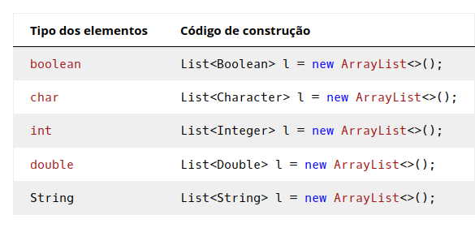
Por outro lado, depois de construída, a lista pode ser manipulada de forma análoga a Python. Nas tabelas abaixo, substitua TE pelo tipo dos elementos, ou seja:
- para
List<Boolean>, substituaTEporboolean; - para
List<Integer>, substituaTEporint; - para
List<Double>, substituaTEpordouble; - para
List<String>, substituaTEporString. - para
List<Character>, substituaTEporchar.
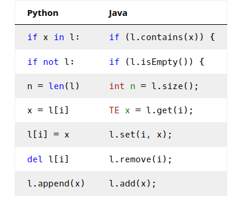
Para iterar sobre uma lista, a instrução for pode ser usada de duas formas: como uma versão alternativa do while, ou como em Python. No segundo caso, é necessário especificar o tipo da variável e usar dois pontos em vez de in.
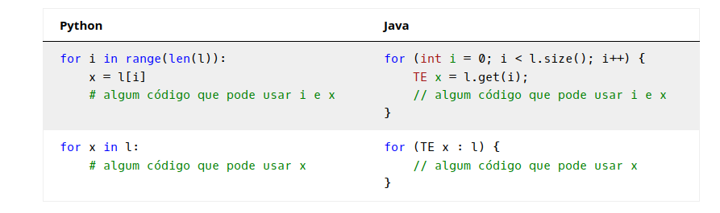
Para criar uma lista de inteiros, você pode usar a seguinte linha de código:
List<Integer> lista = new ArrayList<>();
List<Integer> l;
l = new ArrayList<>();
Dicionários
Em Java, um dicionário tem três tipos: o tipo Map, o tipo das chaves e o tipo dos valores. Os dois últimos são especificados entre menor (<) e maior (>) e separados por vírgula.
Isso significa que todas as chaves de um dicionário devem ser do mesmo tipo e todos os valores de um dicionário devem ser do mesmo tipo.
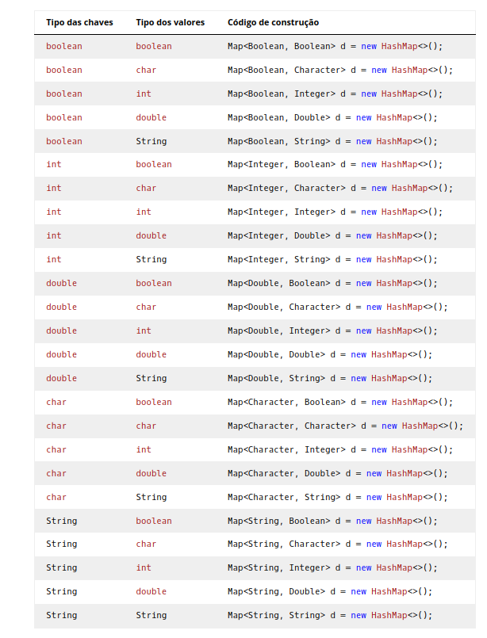
Por outro lado, depois de construído, o dicionário pode ser manipulado de forma análoga a Python. Nas tabelas abaixo, substitua TK pelo tipo das chaves e substitua TV pelo tipo dos valores, ou seja:
- para
Map<Integer, Boolean>, substituaTKporinteTVporboolean; - para
Map<Integer, Double>, substituaTKporinteTVpordouble; - para
Map<String Double>, substituaTKporStringeTVpordouble;
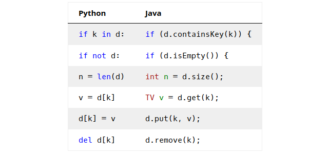
Para iterar sobre um dicionário, a instrução for pode ser usada de duas formas: como uma versão alternativa do while, ou como em Python. No segundo caso, é necessário especificar o tipo das chaves e dos valores e usar dois pontos em vez de in.
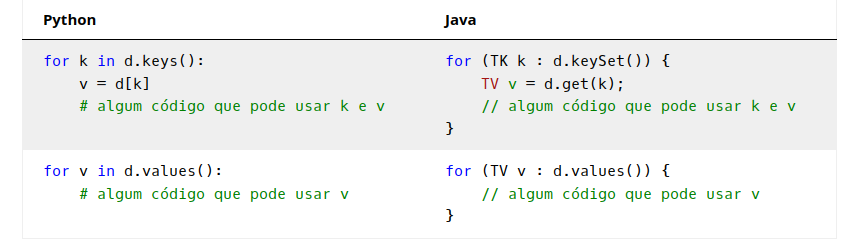
Para criar um dicionário de inteiros e double, você pode usar a seguinte linha de código:
Map<Integer, Double> dicionario = new HashMap<>();
Map<Integer, Double> d;
d = new HashMap<>();